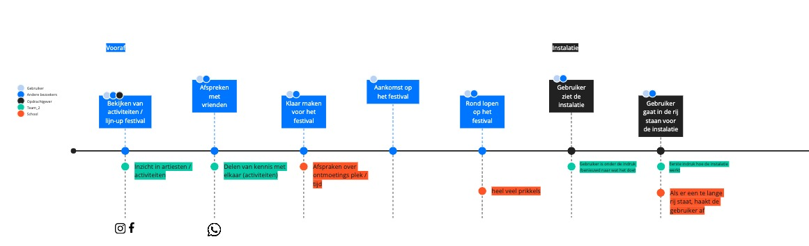
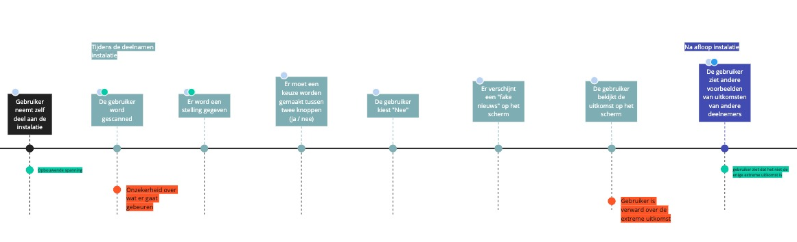
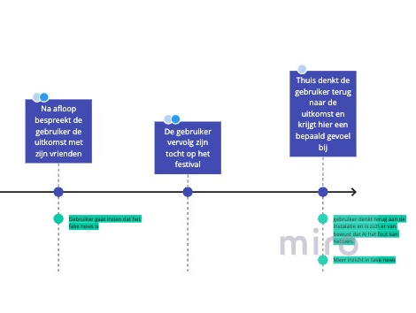
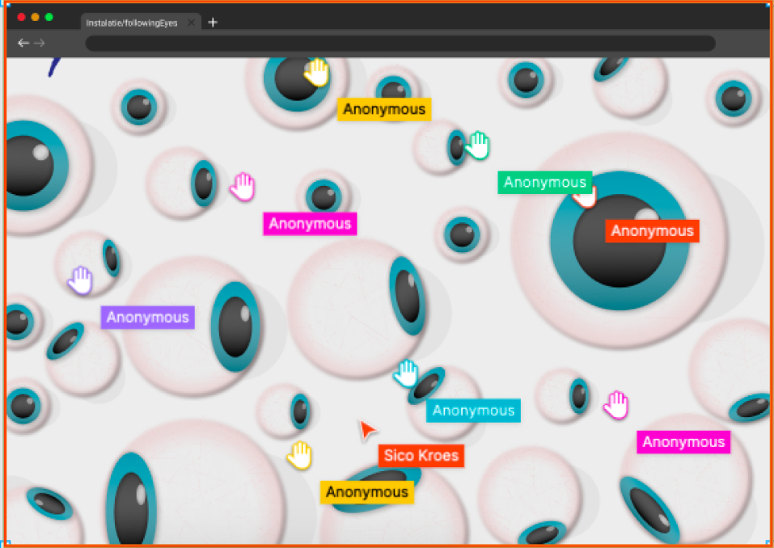

Het team.


CMGT


CMD
Positionering.
Rollen
- UX/UI Concepten bedenken
- Strategie uitwerken en deze vertalen voor developers
- Bewaken van behoefte van de bezoekers/gebruikers
- Concepten bedenken
- Kijken naar technische mogelijkheden
- Uitwerken van het product
- Brief, Adviseren & leiden van project
- Influencers van project richting
- Uitwerken van het product
Creatieve sessie.
Mindmap

Onderzoek doen naar verschillende onderwerpen
| Gedragsverandering |
| Fake News |
| Gedragsverandering door bekeken worden |
| Discriminatie op basis van data |
| Tastbaar maken van data |
| Bewustwording |
| Autoriteit |
COCD box

Hieruit zijn drie concepten gekomen en hiervan hebben we hoe kunnen we vragen gemaakt:
01.
02.
03.


Concepten.

Concept - 1
Met dit concept willen we visualiseren hoe makkelijk het is om devices/mobieltjes te traceren/tracken binnen een specifiek bereik.
Bezoekers moeten hun bluetooth van hun telefoon aanzetten en langs een muur lopen waarop ogen/camera’s op worden geprojecteerd.
Deze ogen/camera’s zullen je individueel volgen.
Met twee, drie of meer bluetooth punten wordt er gemeten hoe ver een device is van de punten. Door alle bluetooth punten en afstanden
te combineren kunnen we bepalen/berekenen waar de gebruiker ongeveer staat ten opzichte van de punten.
Daardoor kunnen we de ogen op de muur naar de gebruiker laten kijken.
Bij de ogen staat de naam van het Bluetooth apparaat (meestal de device name).
Meestal hebben gebruikers deze naam al aangepast naar iets als ‘iPhone van Timon’. Deze naam komt dan naast de ogen te staan op de muur.
Doordat de ogen op de muur nu de persoon volgen en zij zien dat ze gevolgd worden creëren we een bewustwordings effect.
Ze kunnen zo zien hoe makkelijk het is om getrackt te worden. Op internet gaat het tracken met cookies namelijk nóg makkelijker.
Storyboard


Ai generated music
Concept - 2
Het doel van concept is laten zien dat Algoritmes je fout kunnen categoriseren.
Deelnemer ziet de installatie staan. Er zijn twee opties waarmee de leeftijd kan worden aangegeven.
De eerste manier is door voor de leeftijds-scanner te gaan staan. De scanner scant de deelnemer.
Dit gebeurt door middel van AI-face recognition.
Als de deelnemer zich niet willen laten scannen kunnen ze een knop klikken met hun leeftijd.
Op basis van de leeftijd die hij scant of de knop die is ingedrukt schrijft de AI een ai-gegenereerd nummer
dat word gebaseerd op de muziekstyle die uit dat jaar komt (bijvoorbeeld: 80’s, 90’s, etc).
Storyboard


Fake News
Concept - 3
Door middel van Fake News willen we laten zien dat Algoritmes je fout kunnen categoriseren.
De bedoeling is dat de klant deel neemt aan een soort quiz-show, waarbij er allemaal stellingen aan de klant worden gesteld.
Deze stellingen kunnen alleen maar met ja of nee beantwoord worden. Voorbeeld: “Zwarte Piet moet afgeschaft worden”.
Ja? Je geeft niks om het behouden van de Nederlandse Cultuur en laat over je heen lopen.
Nee? Je bent een racist die zich niet met andere kan inleven.
Je antwoord en de tekst die daar dan bij hoord word op het smartboard geupload.
Met dit concept willen we aangeven dat de dingen die jij schrijft op het internet door Algoritmes soms verkeerd kan worden gecategoriseerd/begrepen,
waardoor je anders op het internet overkomt dan dat jij werkelijk bent. Jij bent als persoon namelijk niet zo zwart/wit als de AI je (soms) doet lijken.
Storyboard

Customer Journey
  Requirements.
Conceptueel
Doelgroep moet op social media zitten.
Het doel van de installatie is bewust zijn van social cooling.
Gebruikers moeten in het bezit zijn van een telefoon.
Doelgroep is tussen twintig en dertig jaar.
De gebruiker moet Bluetooth aan hebben staan.
Functioneel
Gebruiksvriendelijk
Gebruiker moet aan het einde een geschokte reactie krijgen van de installatie.
Privacy onvriendelijk!
Uitwerking Concept.
Eye will follow you
Concept Web
Om het concept digitaal te maken hebben we het concept een beetje aangepast. De gebruiker word nu in de browser gevolgd door een oog. hoe meer mensen in de instalatie zitten hoe meer ogen met gebruikersnamen er te zien zijn. Wanneer de gebruiker het geluid uit probeerd te zetten word hij/zij gevolgd door het ook en hierop aangekeken. De gebruiker zal worden aangesproken wanneer ze het geluid uit willen zetten "Ik zou het geluid aan houden", "Probeer me niet te negeren "Lisa". Wanneer de gebruiker klaar is in de browser en deze weg wil klikken zal hij/zij opnieuw aanworden gesproken en een pop-up zal verschijnen of hij/zij zeker weet of ze van de website willen. Hier zal een darkpattern verschijnen waarin geprobeerd word om op cancel te klikken. Wanneer de gebruiker toch op ga weg klikt zal er een externe link worden geopend met weer het homescreen van onze installatie.
Concept Installatie
Ons concept voor 5mei zou van orgineel een instalatie zijn, wanneer de gebruiker voorbij de instalatie zal lopen word hij/zij op basis van bluethooth ge tracked en weer gegeven op een scherm. Het scherm zal een visualisatie zijn van een websbrowser met tabs open van social media kanalen. Verder zal een oog laten zien met daar onder de gebruiker (bleutooth)naam het oog zal elke gebruiker apart volgen. Wanneer de gebruiker dichterbij de instalatie komt zal hij worden aangesproken. Het oog kan van links naar rechts bewegen en naar beneden kijken wanneer de gebruiker dichterbij de instalatie staat. Hierdoor hopen we hun aandacht te trekken. Wanneer ze weg lopen zal hij worden na geroepen: "Hee Lisa ga nou niet weg", "tot zo", etc. Hiermee willen we de gebruiker laten inzien hoe zichtbaar ze zijn op het web.
Prototype Web
Prototype Installatie
Development
Retrospective.
Bijvoorbeeld met welk concept we verder gaan.
Het was daardoor jammer dat CMD'ers minder goed konden meewerken aan prototype.
Bijvoorbeeld het gebruik van Figma, Miro, Visual Studio Code, Git en Webpack